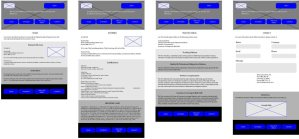

Miller & Goodman Attorneys at Law is a legal practice in Columbia, SC. The outdated Miller and Goodman website needed a facelift as well as a a better contact page. The practice relies mostly on word-of-mouth for attracting new clients, but also wanted to improve its online presence and simplify a busy, drab website that was difficult to navigate.
The scope of this project includes prototypes of the web site as well as the finished product. The pages included in this website are a home, attorney, practice area, and contact page.
Group information together and establish a hierarchy
Create the final relationships and weights of elements on the page

Visual representations of the final look of the page

HTML, CSS/SCSS, JavaScript/JQuery

Source sans pro is simple yet elegant, so it made a good choice for an understated attorney site.
Merriweather is a nice accent font. It adds emphasis while remaining refined.

This type of design ensures that site content is available and accessible on all screen sizes.